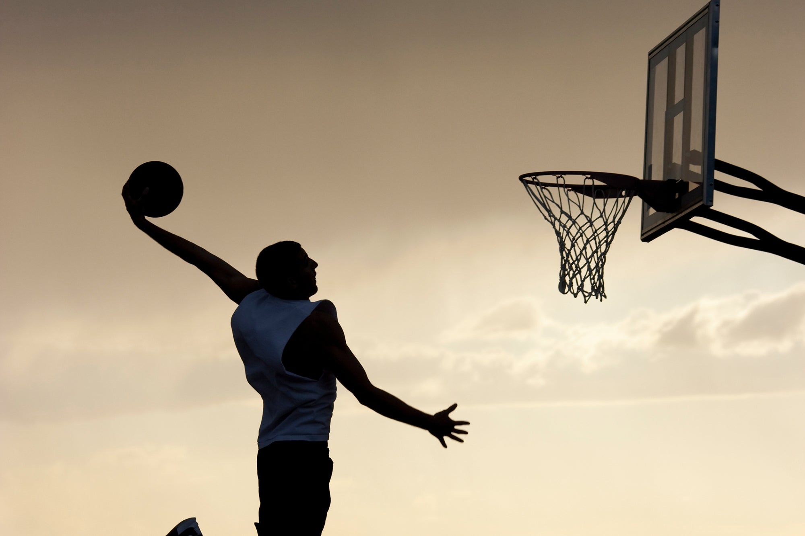
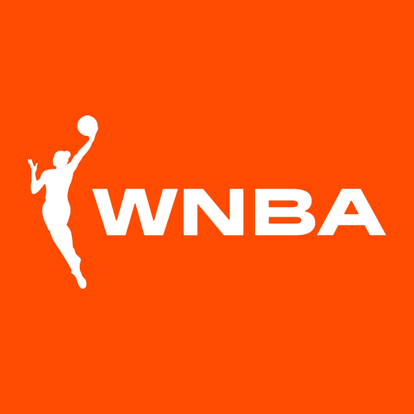
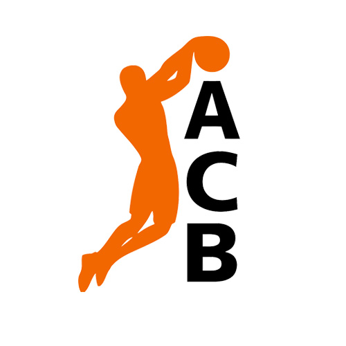

BASQUETBOL
¿Qué es y en qué consiste?
Es un deporte en equipo, en el que dos bandos de jugadores se enfrentan y tienen como objetivo hacer entrar un balón en el aro del equipo contrario. Gana el juego el equipo que más anotaciones o “canastas” haga.
Reglas básicas:
- En un partido se enfrentan dos equipos de doce jugadores cada uno.
- El juego comienza con un salto entre dos jugadores de ambos equipos en el centro de la cancha.
- Cuando un equipo tenga posesión del balón, tendrá 24 segundos para intentar un tiro al aro.
- Una vez que un equipo pasa la línea de mitad de cancha, no podrá volver para atrás.
Fue inventado por James Naismith profesor de la Universidad de Illinois (Massachusetts) y nació como una respuesta a la necesidad de realizar alguna actividad deportiva durante el invierno, en la escuela de YMCA en Massachusetts.
¿Cómo se juega?
Se juega con dos equipos de cinco personas. Al finalizar el segundo cuarto, se realiza un descanso, normalmente de 15 a 20 minutos según la reglamentación propia del campeonato al cual el partido pertenezca.

Ligas más importantes
-
NBA: National Basketball Association

-
WNBA: Women´s National Basketball Association
 -
Liga ACB

Campeonatos y equipos líderes de campeonatos
-
NBA (National Basketball Association): Es la liga de baloncesto profesional más importante del mundo, con sede en Estados Unidos.
Equipos más ganadores
-
Boston Celtics: 17 títulos.
-
Los Angeles Lakers: 17 títulos.
-
Golden State Warriors: 7 títulos.
-
Chicago Bulls: 6 títulos.
-
-
Euroliga (EuroLeague): Es la competición más prestigiosa del baloncesto de clubes en Europa.
Equipos más ganadores
-
Maccabi Tel Aviv (Israel): 6 títulos.
-
Panathinaikos (Grecia): 6 títulos.

-
Regresar